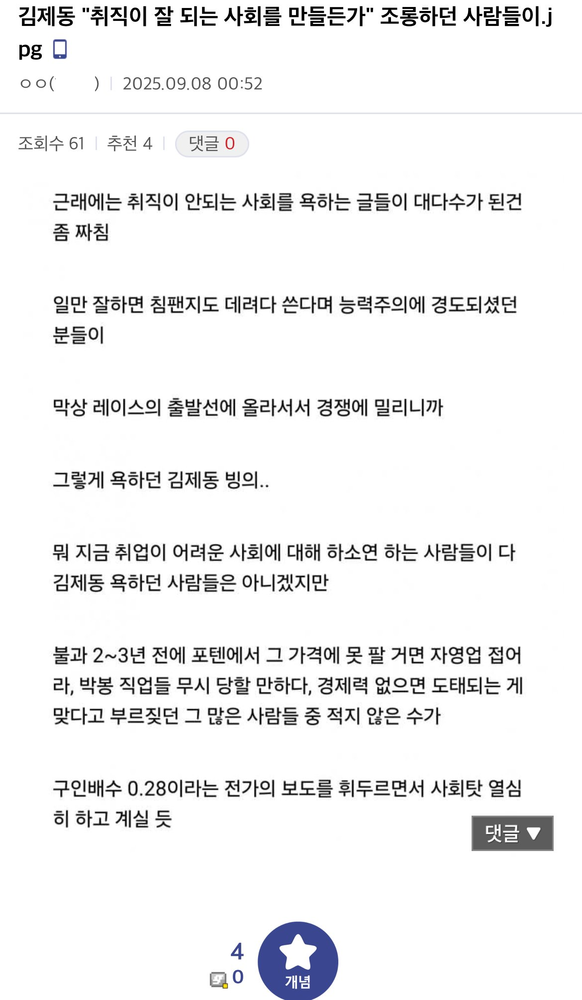

??? : 취직이 안되는 사회를 욕하는 글들이 대다수가 된건 좀 짜침
댓글
20,30대는 쉬었음이고, 40,50대는 짤리면 우리나라는 도대체 누가 일하는가?
??? : 베트남 화짱조가 한국인 일자리를 다 뺏어간다!!!
사실 문돌이들은 그때도 좆망을 받아들였는데 공돌이들이 못 받아들이는듯ㅋㅋ
근데 진짜 심하긴 함 얘를 들면 코로나 전에 부트캠프 출신이나 초대졸 뽑는 it 중소가 요즘은 지거국 서울하위권 컴공과 뽑음
서울대컴공도 대기업 못가고 있으니
요세 기술 뭐 배우면 좋음? 힘쓰는건 자신 없는데 미장이나 도배 마루 괜찮? 용접배울까
정교할수록 근력부담이 적어져 도배 ㄱㄱ 대신 어깨는 강해야함
조선소나 그런데 용접은 어떤지 모르겠는데 건설현장에서 한다는 용접은 힘쓰는일 비슷하게함
미장, 도배도 마찬가지 처음엔 곰방부터 시킴
건설현장이라는게 공장마냥 다 똑같지가 않다보니 전선만 깔고 연결할거같던 전기작업자들도 다 까대기하고 몰탈 비벼서 땜빵하고 가로등세울땐 무거운것도 들고 하더라
갠적으론 사람잘만나는게 젤중요할거같음 일가르쳐준다면서 조공으로 부려먹고 공수 똥떼먹으면서 일도 안가르쳐주는 쓰레기만나면 안된다
곰방이라기엔 그냥 잡일 아님? 곰방도 생각보다 기술 있어야 하던데
잡일맞음 처음부터 쇠손쥐여주고 미장시키진 않는다는거지
진짜 곰방은 곰방만 하는사람들이 따로있음
??? : 경제력은 역대 최고점인데 왜 취업을 못하시죠?
??? : 대체 왜 투자로 돈을 못 버셨죠?
난 걍 공수전환이라고 생각함
저때 사회가 문제다 하던 사람들이 지금와서 태평성대인데 요즘것들은... 하고
저때 개인 문제다 하던 사람들이 지금와서는 사회문제라고함
내편이냐 아니냐의 문제지 마음이 변한게 아님
애초에 저때 조롱당한거도 어떠한 자격이나 분석, 대책을 가지고 나온게 아니라 그냥 공감뿐이라 그런거기도 하고
저때도 말하는 뽄새가 싫었던거지 틀린말해서 욕한건 아니지 않나
정치적으로 원하는 미래는 아니지만 기본소득... 어쩌면 정해진 미래일지도 ..
구인배수 타령은 개웃기네ㅋㅋ
그냥 남일이니까 비웃은거지
인간들이 하여간 솔직하지 못해
지금은 '그땐 쉬웠는데 지금은 아니다.' 이지랄 하든데
세상참어렵다
젊은이들 워킹홀리데이 필수코스 되어뿌겠노
진짜 이렇게될지 몰랐다는거임 ㅋㅋ
그냥 본인 스펙 대비 받는 연봉과 직종에 만족을 처 못하는거지. 같은 세대에 좋은 직장 취업한 애들은 뭐 대가리 총맞아서 그 스펙 쌓아서 좋은 직장 갔냐? 틀딱들 시절에 대학 졸업장만 있으면 취업 됐다고 치자, 반대로 그때 졸업장 없던 새끼들이 아직 쉬었음 하겠음? 병신들이 현실감각 없어서 즈그 스펙에 뭐 해야되는지 아직도 인정을 처 못하지
저 때도 힘들었고 지금도 힘듬, 그 전 세대한테 물어 보면 그 때도 힘들었다 함
지금 커뮤에선 힘든 건 관심 없고 어느게 더 조롱거리가 되는지만 중요한 거
저 때 취업시장을 지배한 악영향들은 일시적인거고
지금은 AI라는 명확하고 우상향하는 리스크때문이라 다르지
작업 프로세스/파이프라인 명확하고 기존 데이터 많은 기업들은 AI대체 실험중임
신입 안뽑고 기존 업무들 AI로 대체하고, 경력자 나가면 ai던져주고 기존들끼리 메꾸라고함 그리고 AI 기술 올라올 때까지 기다려보자하고 있음
'일 = 일할 사람이 필요함'에서 '일 = 데이터가 필요함'으로 패러다임 자체가 바뀌고있는건데 비교불가할정도로 지금이 절망적이지 ㅋㅋ
사무직, 화이트칼라 기준임. 나중에 피지컬AI들어오면 블루칼라쪽도 비슷하게 흘러가긴할거임
옆나라는 히키들 어느정도 죽거나 정리 돼서 취업시장 괜찮다는데 요즘 추세는 ai가 그 자리를 메꾸는 상황이라 지금 양산되는 쉬었음들이 다 죽어도 아랫 세대는 존나 힘들 수도 있음
기본 소득 얘기 나올 때 또 지랄이네 하고 생각했는데 완전 허무맹랑한 소리는 아닐 것 같기도 하다는 쪽으로 바뀌게 되더라
예를들어 부자나 고연봉자들도 반대의 처지가 되면 사회탓하는거지 ㅋㅋㅋ
사람의 가치관이란건 각자의 환경에 의해 주입받은 것일뿐임
시대에 따라서 맞는말이 바뀐거지 별거있나. 저게 딱 10년전 방송인데 그때까지만 해도 취업난 이야기 나오긴 했지만 지방대 나와서 중견기업 잘하면 대기업 가는것도 드물긴 하지만 충분히 가능했던 시대임. AI의 위협 이런것도 존재하지 않던 시대였고.
원래 성향이나 사상이 0.3~0.7 정도에 있는 사람들은
0.0이랑 1.0인사람 둘 다에게 욕먹는거임
근데 사회의 대다수는 0.3~0.7 사이임
진짜 맞는 말임.
오히려 더 심해진 느낌이던데
특히 AI로 인한 실직자들한테 가혹할 정도로 '니가 경쟁력 올리거나 적응해야지' 원툴임
저 때는 안 힘들었는줄 아나 ㅋㅋ
저 지랄하던 놈들이 또 구인배수 심각하던 IMF 당시 구직자 세대는 꿀빤 것처럼 욕하는 게 코미디지
그때는 구인이 문제가 아니라 삶을 스스로 버리는 자들이 너무 많아서 뉴스거리도 안 되던 때라 ㅋㅋ
시장에서 자기가 어떤 가치를 창출할 수 있을지 생각하며 미래를 대비했어야지
그냥 남들따라 수능보고 대학가서 취업할려고 봤더니 취업난? 그걸 누굴 탓함
자신이 가진 노동력은 건장한 응우옌 보다 가치가 낮은데 또 그런데서 몸쓰는 일 하긴 싫어함ㅋㅋ
알아서 도태되겠지 뭐


응 아니야 헌법조무사님 토크콘서트 티케팅이나 열심히 하쇼
쉬었음 버러지 새끼들 싸그리 파병보내서 처리하는 것만이 유일한 해결책이다.
사람의 인생은 운이라는게 좌지우지함 우리가 옛날에 시대상 때문에 억울하게 죽거나 사람 구실 못한 사람들 기억하지 않는거랑 똑같은거임.그래서 더더욱 유연한 태도와 적응형 가치관이 필요함 ai시대에 신입을 안뽑으면 어쨌든 원하는 직무를 하는 어디라도 들어가서 경력을 만들어 놔야함 몇년후에 취업시장이 다시 신입을 뽑는 시장으로 변한다고 할지라도 몇년을 놀면서 나이먹은 신입을 뽑진 않음
그냥 밭갈이 정치 희생양이었지
좌파는 사람을 우민화한다 - 이거슨 진리
그건 양쪽 다임 뭐든 적당히
알바까지 합쳐서 그런거 아닌가
보통 일반적인 회사 다닌다 하면 5년차만 넘어도 300은 그냥 넘지 않나?